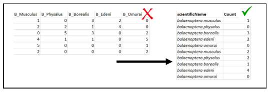
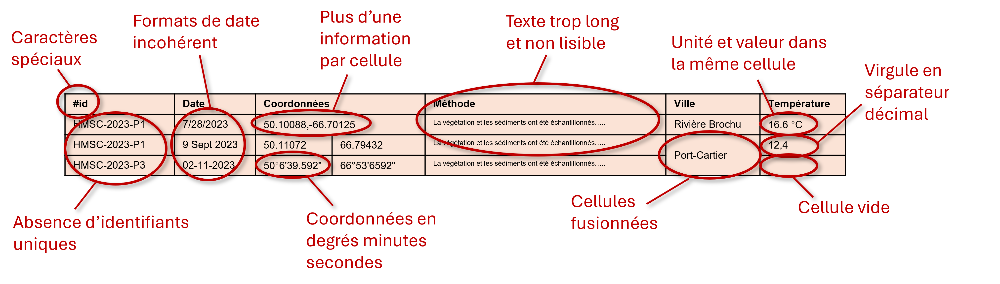

Guide détaillé
Cette section présente un résumé des bonnes pratiques et conventions à appliquer en lien avec la gestion de données.
Ce guide est en construction et sera mis à jour régulièrement afin de l’enrichir et de l’améliorer.
1. Notions de base
- Il est recommandé d’enregistrer et d’envoyer les fichiers de données tabulaires sous un format .xlsx ou .csv.
Essayez de nommer vos fichiers de manière concise et descriptive. Les noms des fichiers doivent rester courts, sans caractères spéciaux et sans espace.
Pour séparer les mots dans un nom de fichier ou dossier, utilisez l’underscore ( _ ) ou le tiret ( - ). Évitez les points dans les noms des fichiers, leur utilisation peut créer des problèmes de compatibilité dans certains systèmes. Limitez l’utilisation des accents.
Exemple de bonnes et mauvaises pratiques:
✔️ 2024_BLABLA_Rimouski.xlsx
❌ Figure 1.temperature.csv
❌ Projet de caractérisation, baie des chaleurs-données de température année 1990-1995.xlsx
Trois règles essentielles pour favoriser une bonne structure des fichiers tabulaires de données :
- Chaque variable doit avoir sa propre colonne.
- Chaque observation doit avoir sa propre ligne.
- Chaque valeur doit avoir sa propre cellule.


Figure 1a et b. a)Données verticales et données horizontales, source: R for Data Science (2e). b)Exemple de modification de structure de fichiers.
2. Normes générales
2.1 Dates et heures
En gestion de données, l’entrée des dates et des heures doit répondre à la norme ISO 8601. Dans la mesure du possible, elle est indiquée en temps universel (UTC : Coordinated Universal Time), ou en indiquant le décalage par rapport à l’UTC.
On peut la décomposer de cette manière :
aaaa-mm-jjThh:mm:ss-00:00 équivaut à Année, mois, jour, T, heure, minute, seconde, UTC
2021-09-09T07:38:00-04:00 équivaut à Heure d’été de l’est, donc UTC-4*
2021-09-09T07:38:00-05:00 équivaut à Heure normale de l’est, donc UTC-5*
*Ces UTC correspondent aux heures d’été et aux heures normales du Québec.
Il n’est pas obligatoire d’entrer l’expression ISO 8601 complète pour noter ses dates et ses heures.
Voici des exemples d’entrées également acceptées :
- aaaa-mm-jj
- aaaa-mm
- aaaa
Dans une perspective d’archivage, il n’est donc pas obligatoire d’entrer les dates et les heures au complet. L’année seule suffit à rendre l’entrée de la date acceptable (il est toutefois préférable d’indiquer les informations complètes quand elles sont disponibles).
Néanmoins le format d’entrée de date doit rester constant.
2.2 Coordonnées Géographiques
Les coordonnées géographiques sont notées sous deux variables distinctes : latitude et longitude.
Elles devraient toujours être notées en utilisant les degrés décimaux (ne pas utiliser les coordonnées en degrés minutes, par exemple).
Dans la mesure du possible, dans le cas de données de biodiversité, chaque observation devrait avoir ses propres coordonnées géographiques. Autrement dit, l’identification d’un spécimen devrait aussi s’accompagner de la prise de la position GPS.
3. Exemples de structure de fichier
3.1 Données de biodiversité
Inventaires de poissons
| eventDate | decimalLatitude | decimalLongitude | stationID | samplingProtocol | event | vernacularName | scientificName | occurrenceStatus | basisOfRecord | longueur_cm | individualCount |
|---|---|---|---|---|---|---|---|---|---|---|---|
| 2024-10-16 | 48.1331 | -69.1706 | P01 | senne | trait 1 | Bar rayé | Morone saxatilis | present | livingSpecimen | 4.5 | 10 |
| 2024-07-16 | 48.1331 | -69.1706 | P01 | senne | trait 1 | Bar rayé | Morone saxatilis | present | livingSpecimen | NA | 95 |
| 2024-07-16 | 48.1331 | -69.1706 | P01 | senne | trait 2 | Éperlan arc-en-ciel | Osmerus mordax | present | livingSpecimen | 10 | 2 |
| 2024-07-16 | 48.1331 | -69.1706 | P01 | senne | trait 2 | Éperlan arc-en-ciel | Osmerus mordax | present | livingSpecimen | NA | 45 |
- Pour plus d’information sur le basisOfRecord et l’occurrenceStatus se référer à l’Annexe 1
Caractérisation par transect et/ou quadrats
| eventDate | decimalLatitude | decimalLongitude | transect | quadrat | kingdom | taxonRank | scientificName | indivudualCount | occurrenceStatus | basisOfRecord |
|---|---|---|---|---|---|---|---|---|---|---|
| 2022-07-16 | 49.300694 | -123.11667 | 1 | 1 | Chromista | species | Fucus distichus | 12 | present | humanObservation |
| 2022-07-16 | 49.300694 | -123.11667 | 1 | 2 | Plantae | genus | Mastocarpus | 0 | absent | humanObservation |
| 2022-07-16 | 49.300694 | -123.11667 | 2 | 1 | Plantae | species | Ulva californica | 5 | present | humanObservation |
Qualité de l’eau (mesures indépendantes et non simultanées à l'identification des espèces)
| eventDate | decimalLatitude | decimalLongitude | stationID | location | samplingProtocol | temperature_degree_C | salinite_psu | pH | conductivite_millisiemens_per_cm |
|---|---|---|---|---|---|---|---|---|---|
| 2024-10-16T15:30-04:00 | 48.1331 | -69.1706 | P01 | Rivière Brochu | sonde | 6.76 | 3.13 | 7.8 | 3.76 |
| 2024-07-16T16:30-04:00 | 48.1331 | -69.1706 | P01 | Rivière Brochu | sonde | 7.35 | 2.74 | 7.9 | 3.38 |
| 2024-07-16T17:30-04:00 | 48.1331 | -69.1706 | P01 | Rivière Brochu | sonde | 7.73 | 1.54 | 7.6 | 1.98 |
| 2024-07-16T18:30-04:00 | 48.1331 | -69.1706 | P01 | Rivière Brochu | sonde | 7.93 | 1.16 | 7.8 | 1.52 |
🟠 Obligatoire (mais pourra être ajouté par le gestionnaire de données au besoin)
🔵 Suggéré
⚪ Exemple de noms données à certaines variables
Ces exemples sont des suggestions de template, à partir de données fictives. À l’exception des variables obligatoires, toutes autres variables peuvent être ajoutées, supprimées ou modifiées. L’important étant de rester constant dans le remplissage de chaque variable et de conserver les bonnes pratiques pour garantir la cohérence des données.
3.3 Données physico-chimiques
Pour les données physico-chimiques, les données peuvent être regroupées dans un seul tableau en respectant les notions de bases et normes générales décrites dans les parties 1 et 2 ci-dessus. Chaque évènement d'échantillonnage ou de mesure in situ est défini par un identifiant unique. Pour chacun de ces évènements, on indiquera ses éléments d'identification et de localisation (station, latitude, longitude, temps, etc...) ainsi que l'ensemble des données issues de l'analyse de cet échantillon et/ou des mesures réalisées in situ.
Imaginons par exemple une campagne d'échantillonnage en mer à deux moments de la journée, le long d'un transect avec trois stations d'échantillonnage où sont réalisées des mesures in situ avec une sonde directement placée dans l'eau pendant l'échantillonnage d'eau pour des analyses en laboratoire. La base de données pourrait être structurée de la manière ci-dessous :
| id | stationID | latitude | longitude | time | temperature | practical_salinity | nitrates | DIC | dissolved_oxygen |
|---|---|---|---|---|---|---|---|---|---|
| RIM_2023_001 | P01 | 50.10088 | -66.70125 | 2023-06-13T06:03:04Z | 4.32 | 23.5 | 2.34 | 183.5 | 86.64 |
| RIM_2023_002 | P02 | 50.25301 | -67.36485 | 2023-06-13T06:24:01Z | 4.51 | 23.4 | 5.87 | 125.2 | 83.71 |
| RIM_2023_003 | P03 | 50.49986 | -67.75423 | 2023-06-13T07:01:57Z | 3.94 | 19.1 | 6.25 | 174.2 | 91.31 |
| RIM_2023_004 | P01 | 50.10088 | -66.70125 | 2023-06-13T18:18:00Z | 6.24 | 23.7 | 2.89 | 184.8 | 86.61 |
| RIM_2023_005 | P02 | 50.25301 | -67.36485 | 2023-06-13T18:34:10Z | 7.78 | 25.9 | 9.45 | 147.2 | 84.02 |
| RIM_2023_006 | P03 | 50.49986 | -67.75423 | 2023-06-13T18:53:49Z | 4.20 | 19.3 | 11.62 | 201.4 | 94.84 |
On notera ici que, bien que les stations aient été répétées au cours de la campagne, l'identifiant au début de chaque ligne est unique et permet de réunir l'ensemble des mesures et analyses réalisées à une station à un moment donné.
⚠️ Important : En l'état une simple base de données unique telle que celle-ci est pratiquement inutilisable. De manière à garantir sa bonne compréhension et donc ses possibilités de réutilisation, il est essentiel que ce tableau soit accompagné d'un dictionnaire de variables expliquant ce que représente chaque variable et comment chacune d'elle a été mesurée (voir section Dictionnaire de variables du présent guide).
4. Erreurs à éviter
Cette section vise à présenter les erreurs les plus courantes à éviter lors de la construction des bases de données. Le tableau ci-dessous contient des erreurs à la fois dans la structure et le contenu des cellules qui compliquent ou rendent impossible son analyse.
4.1 Erreurs fréquentes
La figure ci dessous présente un contre-exemple de base de données général contenant des erreurs :

Parmi ces erreurs on notera notamment :
- Caractères spéciaux : Évitez d'inclure des caractères spéciaux dans le nom des variables
- Identifiants : Ajouter un identifiant unique par évènement
- Date : Utiliser le format ISO 8601 pour renseigner la date et rester consistant sur le format utilisé dans l'ensemble de la base de données
-
Information unique par case :
- Les coordonnées longitude et latitude doivent être renseignées dans des cases séparées
- L'unité de mesure doit être fournie dans une case séparée et jamais directement avec la valeur
-
Coordonnées : Les coordonnées doivent être fournies en degrés décimaux et non en degrés-minutes-secondes
- Lisibilité : Résumer le contenu du texte de manière à le rendre le plus concis possible
- Structure du tableau : Ne jamais fusionner des cellules
- Séparateur décimal : Utiliser des points et non des virgules
- Absence de valeurs : Écrire NA pour indiquer une cellule sans donnée et ne pas laisser de cellules vides.
Le tableau ci-dessous présente la même information, mais dans un format compréhensible et interopérable.
Base de données corrigée contenant les informations du tableau précédent
| eventID | eventDate | decimalLatitude | decimalLongitude | stationID | samplingProtocol | location | measurementType | measurementValue | measurementUnit |
|---|---|---|---|---|---|---|---|---|---|
| HMSC-2023-P1 | 2023-07-28 | 50.10088 | -66.70125 | P1 | Seine | Rivière Brochu | temperature_surface | 16.6 | degree_C |
| HMSC-2023-P2 | 2023-09-09 | 50.11072 | -66.79432 | P2 | Fyke Net | Port-Cartier | temperature_surface | 12.4 | degree_C |
| HMSC-2023-P3 | 2023-11-02 | 50.11099 | -66.89432 | P3 | Carotte de sédiments | Port-Cartier | temperature_surface | NA | NA |
4.2 Pour résumer
A éviter :
- Les noms de variables ne doivent pas être des valeurs
- Les variables ne doivent pas être contenues à la fois dans les lignes et les colonnes
- Chaque type d’unité d’observation doit être stocké dans sa propre table
- Les cellules ne doivent pas être fusionnées
- Évitez d'inclure des caractères spéciaux dans les variables (ex., #)
- Évitez de laisser le titre de la variable videBonnes pratiques :
- Utilisez le format ISO 8601 pour les dates
- Ajoutez un identifiant unique par évènement
- Séparez la latitude et la longitude
- Indiquez les coordonnées en degrés décimaux
- Préciser le système de coordonnées géographique de référence
- Résumez le contenu du texte (méthodologie) pour le rendre le plus concis possible
- Utilisez le point comme séparateur décimal dans les fichiers tabulaires
- Insérez 'NA' pour les cellules vides
- Indiquez les unités des mesures
- Ajouter stationID (si possible et pertinent)
- Ajouter sampleID (si possible et pertinent)
- Créez un dictionnaire de données (si possible et pertinent)